01 · BEGINNINGlook closer
Take it apart.
Days spent opening things up to see how the parts worked together.
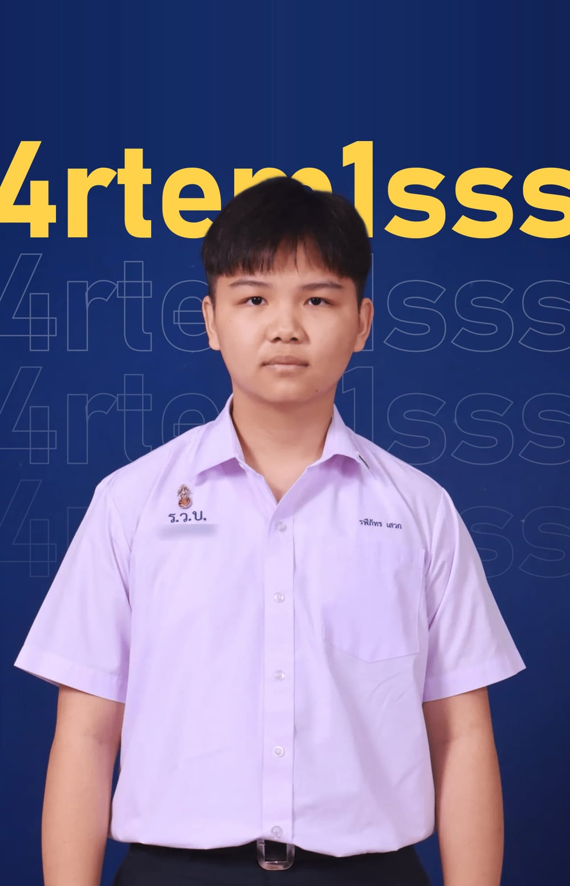
img/portrait-ign.jpgp.01about me
#RS3
I take things apart to see how they work. At 18, I build things people rely on, and I already run a small startup that gets paid for it.
ORIGINp.02 · where curiosity started
01 · BEGINNINGlook closer
Days spent opening things up to see how the parts worked together.
02 · DISCOVERYask why
How do people build something this complex? I wanted to find out.
03 · FIRST TOOLStry it
Programming, then the SMT programme: real projects, real competitions.
Taking things apart taught me how parts work together. Programming and networks showed me how devices talk. WordFlow showed me that people depend on that data being right. Building systems where all three meet is what I want to keep learning.
GROWTHp.03 · learning from setbacks
Thailand's national cybersecurity competition. Each challenge hides a secret code, the flag, inside network traffic, a cipher or a website. Find it and your team scores.
P8
P62. Out of my depth, with very little background.
P8 after one focused week of prep. +54 places.
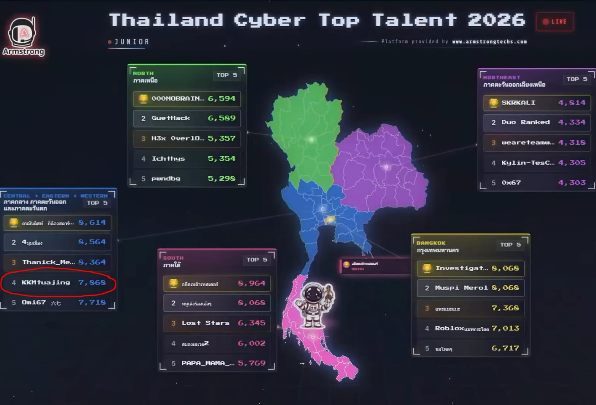
img/tctt.jpgSTARTUPp.04 · DoCode
I co-founded DoCode, a small web and SEO studio. Real businesses hire us to build their websites, and they pay real money for it.
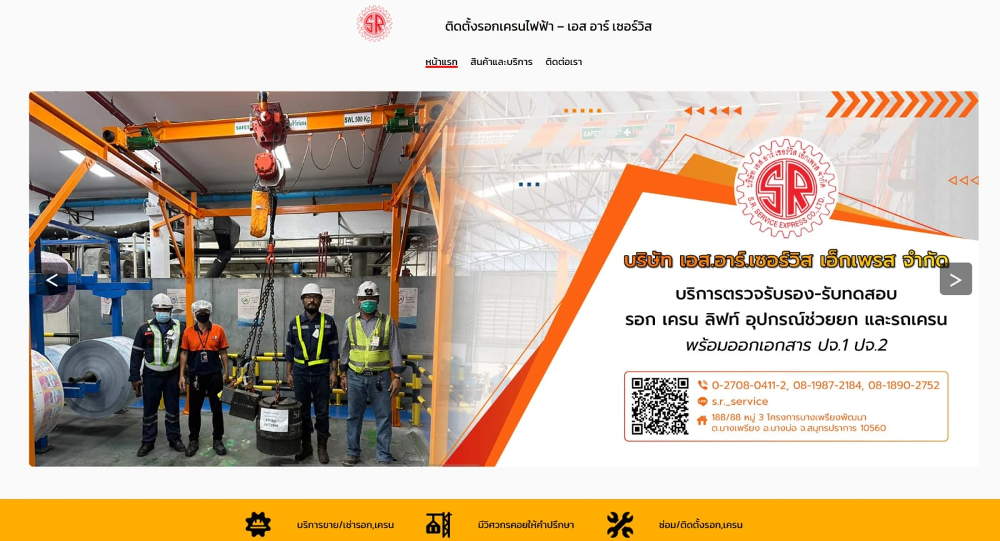
img/docode.jpgPURPOSEp.05 · team lead
WordFlow
A mobile game that helps children with a reading disability learn to read Thai, and shows their doctor how each child is doing.
1 in 14 Thai children aged 5 to 14 has a learning disorder, and for over 80% of them the struggle is reading. Time with a specialist is hard to get: there are too few of them, and every session costs time and money.
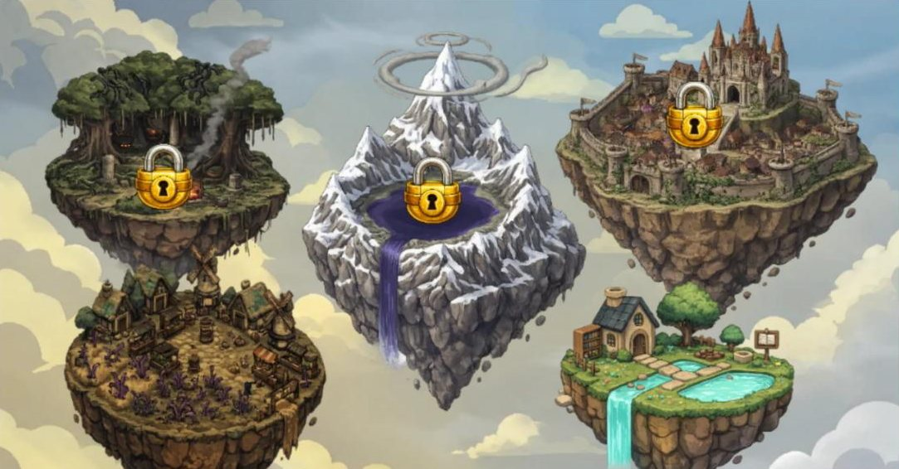
img/wf-islands.jpg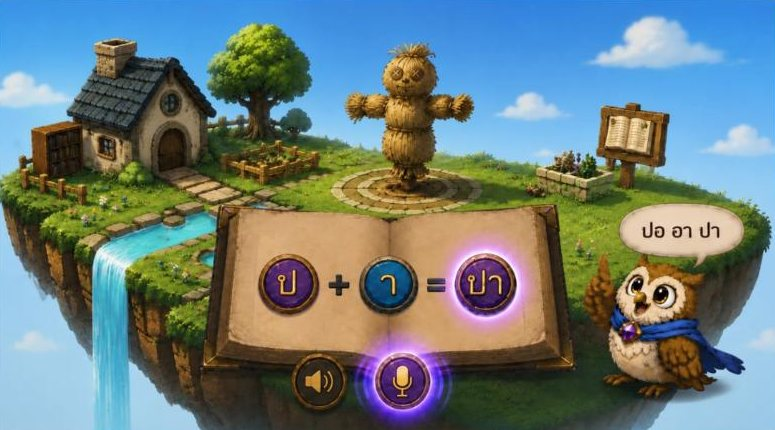
img/wf-build.jpgDrag letter stones together: ป + า makes ปา, "throw". The owl guide reads it out first.
Hold the mic and read. Our speech model splits the recording into its sounds and scores each one in the background, so the child never sees a red cross.
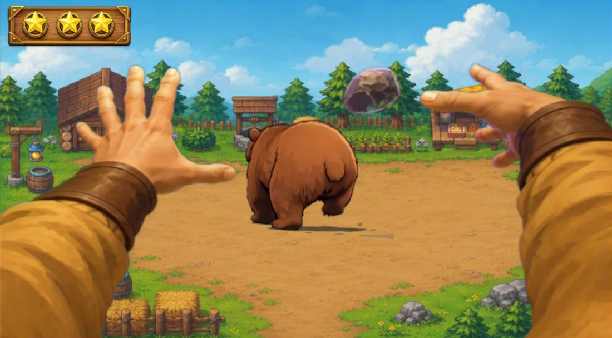
img/wf-cast.jpgThe spell does what the word means. ปา throws a rock, the bear backs off, and the stars fill up.
Each spell then takes one lap through five systems on its way to the doctor. That lap is the circuit on the next page.
PURPOSEp.05 · WordFlow, lap by lap
From a child's voice to the doctor's screen, through five systems. Every score has to arrive, correct.
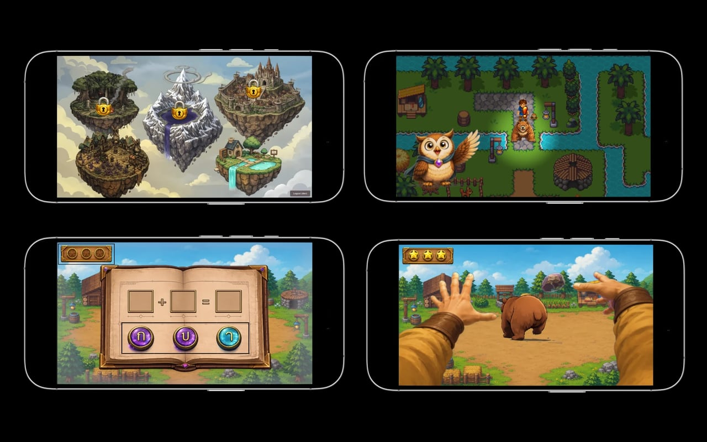
img/wf-game.jpgT1 · Game appmy part
A Unity game where children explore islands and build Thai words sound by sound. I built the user accounts, so every session belongs to the right child.
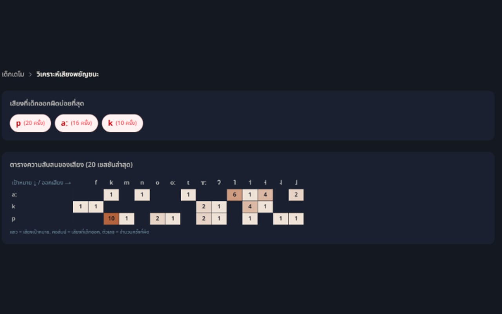
img/wf-speech.jpgT2 · Speech modelteam
The team's ReVoiceAI model (W2V-BERT, Thai IPA) breaks each recording into its sounds, so a doctor can see exactly which sounds a child mixes up.
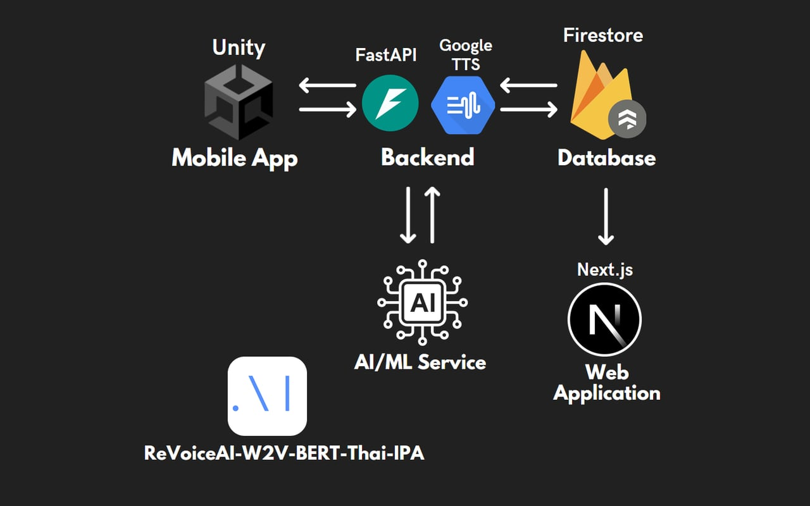
img/wf-backend.jpgT3 · Backend APImy part
A FastAPI backend connects the game, the speech model and the database, and links each child to their doctor. I helped build it.
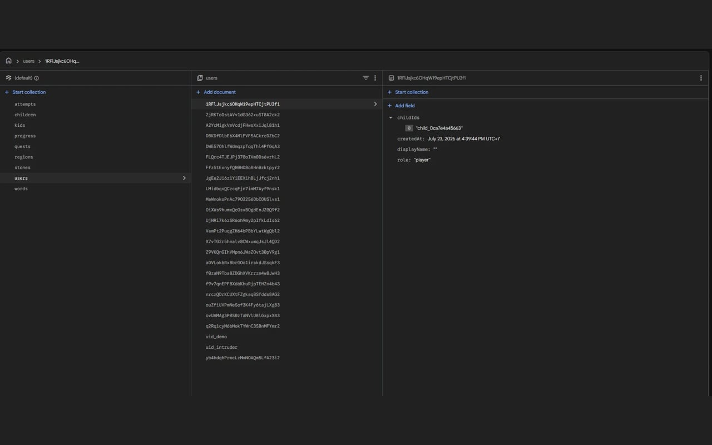
img/wf-database.jpgT4 · Databasemy part
I aligned field names, API routes and data structures across every part, so a value means the same thing in the game, the backend and the dashboard.
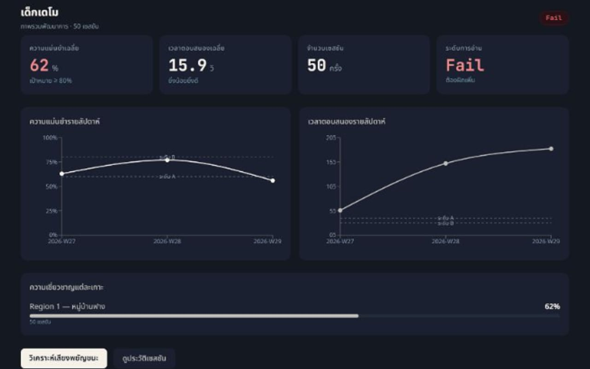
img/wf-dashboard.jpgT5 · Dashboardmy part
The Next.js doctor portal I built: accuracy and response time week by week, and which sounds still need work.
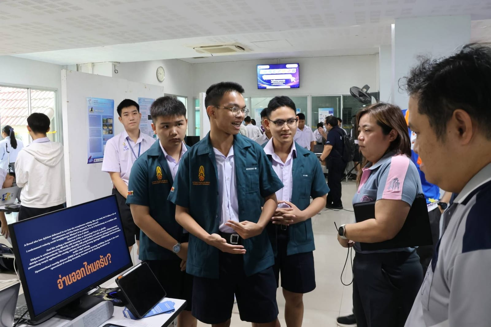
img/wordflow-game.jpgFinish · NSC 28result
I led the team, and wrote end-to-end tests from starting a game to reading the results back.
TEAMp.06 · how I work with others
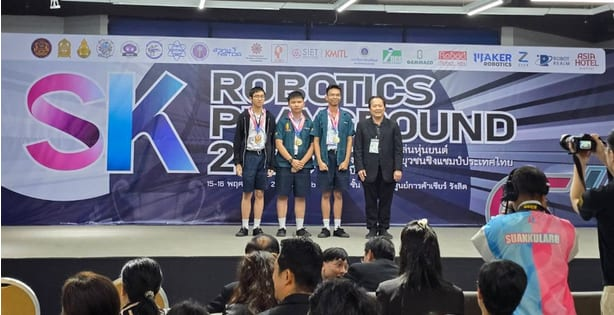
img/zeitop.jpgOld Android phone → PC control surface.
My jobUX/UI and the interactive web controller.
Gold3rd runner-upZeiTop, in short
An open-source app that gives an old Android phone a second life as a control surface for a PC. The phone runs a web controller and talks to the computer over WebSocket, so a tap on the phone happens on the PC right away.
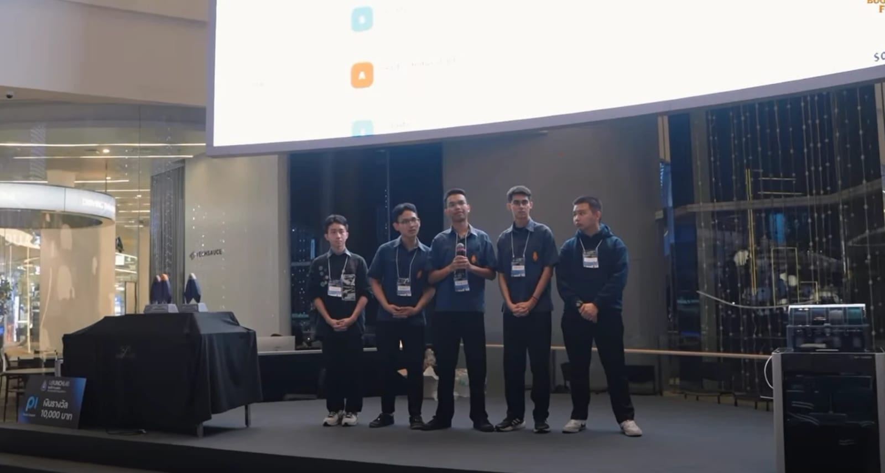
img/subtrack.jpgFinds forgotten subscriptions in your inbox.
My jobSolution design, user flow, and the pitch.
1st10,000 THBSubTrack, in short
Built in 12 hours at an AI startup hackathon. SubTrack looks through your inbox for the subscriptions you forgot you were still paying for and puts them in one list, so you can see what to cancel.
PROOFp.07 · results and tools
FUTUREp.08 · where curiosity leads
Devices, the networks between them, and the people who rely on them. That's where I'm heading next.